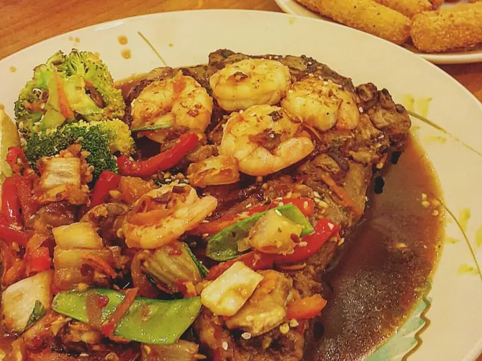

Фото: Debbie Tingzon, CC BY 2.0

Креветки с чесноком
Креветки, обжаренные в чесночном масле с лимоном, за 15 минут
15 мин3 порц.295 ккал на порциюБ 32 · Ж 17 · У 3Средиземноморская кухня
Продукты на 3 порц.
- Креветки500 г
- Чеснок4 зуб.
- Сливочное масло30 г
- Оливковое масло1 ст. л.
- Лимон0,5 шт
- Петрушка0,5 пучка
- Соль2 щеп.
- Острый перец молотый по желанию1 щеп.
Как готовить
- Креветки разморозьте, очистите от панциря, если они не очищены, и обсушите полотенцем.
- Чеснок нарежьте тонкими пластинками, петрушку мелко порубите.
- Разогрейте оливковое и сливочное масло на сковороде на среднем огне. Обжарьте чеснок 1 минуту до аромата, не давая потемнеть.
- Прибавьте огонь до сильного, выложите креветки в один слой. Жарьте 1-2 минуты с каждой стороны, пока они не станут розовыми и не свернутся.
- Посолите, добавьте острый перец, сок лимона и петрушку. Перемешайте и сразу снимите с огня.
Совет. Креветки готовятся за 3-4 минуты. Если жарить дольше, они станут резиновыми. Варёно-мороженые креветки только прогревают 1-2 минуты.